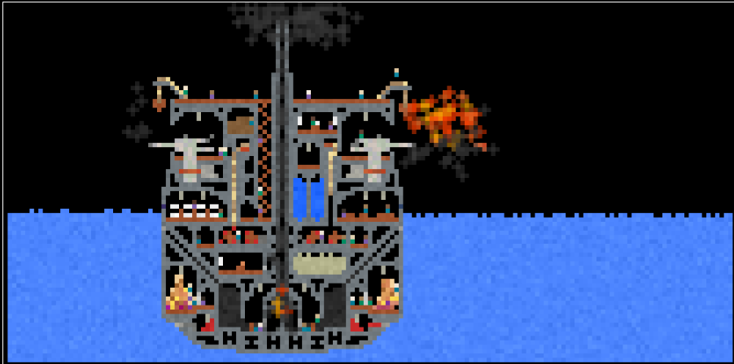
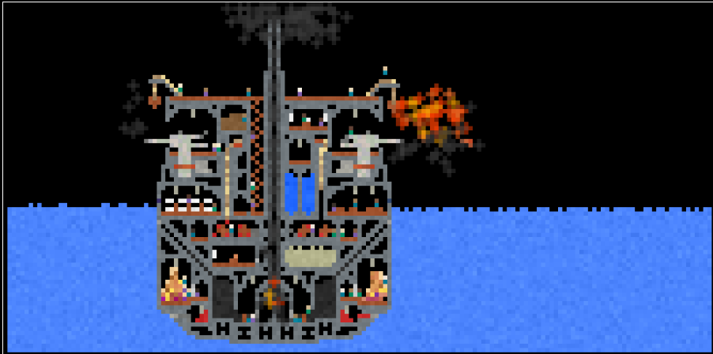

Two Punk Racing 2
Two Punk Racing 2 jest tutaj z nowymi poziomami i zawodnikami. Aby ukończyć wyścig jako pierwszy, musisz kupić nowe samochody lub zmodyfikować swój samochód. Jeśli chcesz kupić potężne i efektowne samochody, ścigaj się na 12 poziomach w trybie „Wyścigi” lub zarabiaj pieniądze, przechodząc przez pierścienie w trybie „Dowolna jazda”.
Możesz grać w trybie 1 gracza lub w trybie podzielonego ekranu dla 2 graczy. Możesz przyspieszyć swój pojazd, używając znaków prędkości na drogach.
Gracz 1
Ruch: „STRZAŁKI”
Nitro: „N”
Spójrz wstecz: „B”
Gracz 2
Ruch: „W, A, S, D”
nitro: „T”
Spójrz wstecz: „C”
Ponowne uruchomienie poziomu: „R”
Teraz, jeśli jesteś gotowy do wyścigu, zmotywuj się i wygraj grę!

Two Ball 3D
Postaraj się doprowadzić piłkę do najdalszego punktu na trasie składającej się z kostek. W grze dostępne są tryby dla 1 i 2 graczy. Możesz kupić kilka bonusów w „Sklepie”, używając zebranych diamentów. Bonusy obejmują diamentowy magnes, 2x licznik diamentów i zbroję na pułapki. Możesz wykorzystać bonusy zakupione w sekcji Sklep, aby pokonywać dalsze odległości w trybie dla jednego gracza.
Pierwszy, który upadnie, przegrywa rundę w trybie dla 2 graczy. Dlatego lepiej bądź bardziej ostrożny niż twój przyjaciel, jeśli chcesz wygrać. W miarę postępów na poziomach gra będzie coraz trudniejsza i będzie przegrany!
Sterowanie w grze: „A, D” i „Strzałki w lewo - w prawo”.

Two Ball 3d Dark
Two Ball 3D jest online z nową wersją ciemnego motywu! Wraz z nową wersją gry dodano wiele nowych funkcji. Teraz możesz widzieć bardzo duże odległości, dzięki czemu możesz bardziej uważać na pułapki. Kiedy zeskoczysz z ramp, otworzą się nowe skrzydła i będziesz mógł skakać bardziej zrównoważony. Do gry dodano nowe skróty do korzystania z bonusów. Możesz odblokować 6 różnych skórek piłek za pomocą zebranych diamentów!
Jak grać?
RUCH: „A, D” i „strzałki w lewo – w prawo”
PANCERZ: „1”, MAGNES: „2”, PODWÓJNY LICZNIK: „3”
Możesz grać w Two Ball 3D: Dark dla 1 lub 2 graczy!
Spróbuj poprawić swój rekord.

Moto_x3m
Moto X3M to fajna motocrossowa gra kaskaderska. Z 22 wymagającymi, ale uzależniającymi poziomami. Załóż kask, ulepsz swój motocykl i ruszaj, aby pokonać czas na wszystkich niesamowitych etapach. Wykonuj sztuczki, takie jak salta, aby skrócić swój czas.

Moto_x3m 2
Kontynuacja wciągającej i wymagającej motocyklowej gry kaskaderskiej Moto X3M 2! Nowe niebezpieczne przeszkody i nowe motocykle do ulepszeń. Miej swoją dawkę adrenaliny i odblokuj wszystkie osiągnięcia - znajdź się na szczycie tabeli liderów!

Moto_x3m 3
Moto X3m 3 nie jest pierwszą rowerową grą od Mad Puffers. Jest to jednak najlepsza gra, ponieważ wykorzyst najnowsze technologie i została wydana z mobilnym wsparciem. Poprzednie gry były dobre, ale nie wystarczająco - ta gra pokazała społeczności, jak dobre mogą być gry rowerowe HTML5. Od tamtej pory seria Moto X3m kontynuuje produkcję nowych i bardziej szalonych poziomów.

Moto_x3m Winter (4)
Czy jest lepszy sposób na świętowanie świąt niż tony wyczynów kaskaderskich na przekór śmierci? Wskocz na ten motocykl i przygotuj się na unikanie gigantycznych brzeszczotów podczas przedzierania się przez zimową krainę czarów. Czy uda ci się przejść przez każdą linię mety bez zderzenia z tuzinem pudeł TNT lub innymi szalonymi zagrożeniami? Ta szalona, zimowa gra wyścigowa może zająć Cię aż do wiosny, a nawet dłużej!

Moto_x3m Pool Party (5)
Moto X3M Pool Party to kolejna kontynuacja udanej serii, w której wracasz na motocykl. Miłośnicy sportów ekstremalnych dadzą radę, gdyż gra oferuje wiele zróżnicowanych przeszkód, podczas których można wykonać najróżniejsze sztuczki. Oprócz różnych skoków, możesz także jeździć po lodzie lub pod wodą. Będziesz także musiał unikać niebezpiecznych biegów i innych podobnych pułapek. Nie zapominaj, że czas jest tutaj również bardzo ważny, więc nie marnuj go nigdzie. Więc wsiadaj na rower i do dzieła!

Moto_x3m Spooky Land (6)
Bycie motocyklistą staje się coraz bardziej niebezpieczne, aw odcinku Moto X3M Spooky Land trasy są jeszcze bardziej zwariowane i szalone! Wsiądź na rower i staw czoła czyhającym na Ciebie niebezpieczeństwom, niesamowitym skokom, pętlom, pułapkom, których należy unikać, śmiercionośnym piłom i tym wszystkim, co będzie wymagało Twojej koncentracji przez cały czas, aby nie upaść. Spróbuj ukończyć każdy z 22 poziomów w jak najkrótszym czasie! A jeśli pod koniec dnia twój kaskader przeżyje, możesz poprosić jego szefa o podwyżkę i premię za ryzyko!

Snow Rider 3D
Snow Rider 3D to realistyczna gra polegająca na jeździe na sankach, która przyspieszy bicie serca. Zejdź ze wzgórza i unikaj wszystkich przeszkód. Zbierz wszystkie prezenty, które będą na twojej drodze. Wykorzystaj prezenty przy zakupie wszystkich sań. Zagraj teraz i przeżyj ekscytującą jazdę!

Wheely 1
Poznaj ponownie Car Wheely! W tym rozdziale ma zamiar przymierzyć kapelusz detektywa i rozwiązać wszelkiego rodzaju tajemnice na całym świecie. Być może był pod wrażeniem tego filmu o Sherlocku Holmesie lub po prostu chciał dla odmiany spróbować czegoś nowego. Może nawet myśli o zostaniu radiowozem. Kto wie? Ale nasz mały czerwony przyjaciel planuje rozpocząć nowe życie i nic nie możesz zrobić, aby go przekonać! Więc jedyne, co możesz zrobić, to zaoferować mu swoje towarzystwo – nie popełnij błędu, będzie go potrzebował.
Tak jak poprzednio, będziecie mieli okazję podziwiać ładne widoki z kreskówek i uroczą animację twarzy Wheely'ego, która zmienia się w zależności od tego, jak dobrze idzie jego misja. Droga będzie wiodła przez wsie, miasta, a czasem nawet przez bezdroża bez śladu cywilizacji i serwisu samochodowego. W takich miejscach należy postępować bardzo ostrożnie. W końcu jeśli coś stanie się naszemu bohaterowi, nie będziesz w stanie zrobić nic, by złagodzić jego cierpienie. Pamiętasz, jak złamał koło w jednym z wcześniejszych rozdziałów? To go naprawdę wkurzało podczas podróży. Więc upewnij się, że Wheely'emu nic się nie stanie, dopóki nie dotrze do celu.
Nowa rola detektywa prowadzi naszego niespokojnego kumpla do przodu przez wiele poziomów zablokowanych przez wszelkiego rodzaju przeszkody. Aby je przesunąć i oczyścić drogę, musisz pomyśleć, które dźwignie pociągnąć i które przyciski nacisnąć. Na początku wszystko to nie sprawi ci większych kłopotów. Ale stopniowo złożoność zagadek będzie rosła i będziesz musiał spędzać coraz więcej czasu na zastanawianiu się, jak to wszystko działa. Na szczęście jest też druga strona – z każdym nowym poziomem będziesz mieć coraz większe doświadczenie w rozwiązywaniu problemów. Ludzki mózg uczy się dość szybko. Radzenie sobie z podobnymi zadaniami sprawi, że będziesz lepiej przygotowany na bardziej złożone łamigłówki, które czekają na Ciebie przed sobą.
Ta gra będzie świetna dla dzieci, ponieważ przyczynia się do logicznego myślenia i konfrontuje małych graczy z zadaniami, które mają napotkać również po drugiej stronie ekranu. Jeśli chcesz, aby Twoje dzieci rosły mądre i niezależne, Wheely jest tym, czego potrzebują!

Wheely 2
Nawet samochody mogą się czasem znudzić. Tak stało się z naszym małym przyjacielem Wheelym, który zmęczył się bezsensownym staniem w garażu i postanowił zwiedzić świat. Jedynym problemem jest to, że samochody nie są zbyt inteligentne, więc po kilku kilometrach Wheely miał trudności z poruszaniem się dalej. Przynajmniej bez twojej pomocy. Siódmy odcinek jego bajkowej podróży przeniesie Cię w jeszcze bardziej ekscytującą przygodę typu „wskaż i kliknij”! Tym razem mały samochód udaje detektywa zdeterminowanego, by rozwiązać skomplikowaną zbrodnię. Aby to zrobić, musi podróżować po świecie pod Twoim starannym przewodnictwem. Wejdź w interakcję z dźwigniami i przyciskami za pomocą myszy, aby oczyścić sobie drogę przez poziom.

Wheely 3
To się przydarza każdemu z nas. Tam żyjemy jak zwykle, robiąc codziennie te same rzeczy i nie widząc różnicy między wczoraj a jutrem, gdy nagle spotykamy kogoś, kto wszystko zmienia. Świat eksploduje nowymi kolorami, wszystko wydaje się lepsze niż kiedyś, a my zawsze jesteśmy w dobrym humorze, bez względu na to, co nam się przytrafia. Brzmi znajomo? Tak, mówimy o uczuciu twojej pierwszej miłości. Nasz mały przyjaciel Wheely też nie jest mu obcy.
Pewnego dnia jechał ulicą i zobaczył wspaniały samochód o imieniu Jollie. Ta piękna dama od razu zdobyła jego serce! Próbował za nią podążać, ale światła się zmieniły i jej już nie było. Wheely 3 zdążyła tylko zaznaczyć kierunek, w którym zniknęła. Więc teraz jest zdeterminowany, aby pójść tą drogą i znaleźć dziewczynę swoich marzeń za wszelką cenę! Oczywiście takie zadanie wymaga poważnej pomocy. A Wheely ma szczerą nadzieję, że będziesz tam, aby mu pomóc. Czy jesteś gotowy na kolejną ryzykowną wyprawę, pokonując liczne przeszkody i łamigłówki? Czas uruchomić silnik i ruszać!
Podróż odbędzie się w nowych ustawieniach, ale zasada pozostanie ta sama: rozwiązuj zagadki i przesuwaj obiekty, aby dostać się do czerwonej flagi. Będziesz musiał dowiedzieć się, których dźwigni i przycisków użyć, aby odblokować drogę, wprawić ruchome platformy w ruch i zbudować mosty, aby pokonać najtrudniejsze przejścia. Nie poddawaj się, jeśli nie możesz od razu znaleźć odpowiedniego rozwiązania! W końcu życie osobiste Wheely'ego zależy teraz od twoich umiejętności rozwiązywania zadań!

Wheely 4
W odległym, cichym, idyllicznym miasteczku mieszka czterokołowa ślicznotka o imieniu Wheely 4 part. To uroczy czerwony chrząszcz, który uwielbia przygody i wykorzystuje każdą okazję, by wyruszyć w kolejną wyprawę. Tym razem ma zamiar przekroczyć granice czasu i przestrzeni i znaleźć się w przeszłości, gdzie ma coś do załatwienia. Wszystko zaczyna się, gdy nasz bohater łamie sobie koło i udaje się do serwisu samochodowego, w którym akurat pracuje jeden z jego przyjaciół. Ale podczas tej całkowicie bezpiecznej i niczym nie wyróżniającej się przejażdżki coś idzie nie tak i Wheely zostaje wciągnięty w wir czasu. Teraz jest w miejscu, które widzi po raz pierwszy i nie ma pojęcia, jak się stąd wydostać. Czas podać pomocną dłoń naszemu biednemu samochodowi!
Poziomy są zbudowane jak zwykle, w tym system przełączników i dźwigni kontrolujących wejście do następnej lokacji. Wiedza o tym, jak działają, ma kluczowe znaczenie dla postępów Wheely'ego. Jednak zrozumienie tego będzie wymagało logicznego myślenia. Możesz nawet nie odnieść sukcesu od pierwszego strzału. Nie denerwuj się, nie przestawaj myśleć, a znajdziesz właściwą odpowiedź! Ta gra jest niesamowita w rozwijaniu umiejętności rozwiązywania problemów i kto wie, może nawet przydadzą się w rzeczywistych sytuacjach! Im dalej posuwa się nasz ulubiony kumpel samochodowy, tym trudniej jest przejść poziom. Cóż, kto powiedział, że będzie łatwo? Trudności tylko wzmocnią Cię i zapewnią Twojemu umysłowi niezły trening podczas rozwiązywania wszystkich tych zagadek! A Wheely w końcu będzie mógł zostać naprawiony w serwisie samochodowym. Pamiętać? Koło wciąż go boli, więc pospiesz się!

Wheely 5
Ten facet nie może pochwalić się zaawansowanymi parametrami technicznymi ani ultranowoczesnym designem. Mieszka w małej wiosce, gdzie życie toczy się gładko i spokojnie i gdzie nic się nie dzieje… Chyba, że Wheely przyniesie ze sobą kolejne kłopoty! Zawsze jest gotowy na kolejną przygodę i nie boi się wielkiej drogi, która go czeka. Kiedy nadarza się okazja, wskakuje na swoje cztery koła i znika w oddali… Nic na to nie poradzisz. Oprócz pilnowania naszego małego przyjaciela i upewnienia się, że dotrze do celu bez żadnych problemów.
Cóż, to nie będzie łatwe. Gdy Wheely opuszcza swoje ciche przedmieścia, przejeżdża przez pola i wkracza na ruchliwe ulice miasta, napotka różnego rodzaju trudności. Jego droga zostanie zablokowana przez szereg przeszkód. Twoim celem jest rozwiązanie tych zagadek, manipulując przełącznikami i dźwigniami ukrytymi na mapie. Gdy trafisz na właściwe rozwiązanie, droga zostanie oczyszczona, a Wheely będzie mógł kontynuować swoją podróż. Na końcu lokacji znajduje się czerwona flaga. Osiągnięcie go oznacza, że pomyślnie przeszedłeś poziom i możesz teraz przejść dalej w swoim zadaniu. Użyj swojej logiki i pomóż Wheely'emu ukończyć wszystkie poziomy!

Wheely 6
Jeśli jesteś fanem Wheely'ego i jego niekończących się przygód, czeka Cię kolejna podróż. Nasz niespokojny samochód znalazł się w nowej sytuacji i tylko ty możesz mu pomóc. Tym razem masz zamiar ścigać się z innymi samochodami, które poruszają się dość szybko do przodu, więc musisz się pospieszyć, przesuwając łamigłówki, w przeciwnym razie ryzykujesz, że zostaniesz daleko w tyle. Aby wyprzedzić przeciwników, musisz przesuwać dźwignie i naciskać przyciski kontrolujące przeszkody stojące na twojej drodze. Ostatecznym celem jest dotarcie do czerwonej flagi oznaczającej koniec każdego poziomu. Opanowanie sterowania grą, które jest dość intuicyjne, nie zajmie Ci dużo czasu. Aby wprawić Wheely'ego w ruch, po prostu kliknij chrząszcza. Kliknięcie obiektu pozwoli ci na interakcję z nim. Podobnie jak poprzednie rozdziały, Wheely 6 oferuje wciągającą rozgrywkę, jednocześnie zwiększając twoje umiejętności logiczne. Kilka pierwszych poziomów będzie dość prostych, ale każda kolejna lokacja będzie wymagać nowych, coraz bardziej złożonych zagadek i pułapek. Myślisz, że dasz sobie z nimi radę? Pomóż Wheely'emu zebrać wszystkie czerwone flagi i pokonać rywali w tym ogromnym wyścigu puzzli!

Wheely 7
Życie rodzinne różni się od randkowania i Wheely musiał się tego nauczyć na własnej skórze. Pamiętasz, jak w poprzednim rozdziale zakochał się w uroczym samochodzie o imieniu Jollie? Po wszystkich trudach i kłopotach w końcu spotkali się i postanowili się pobrać. Kto może ich winić? Miłość jest silnym uczuciem i kiedy już pojawi się w twoim życiu, nic nie możesz zrobić, aby ją powstrzymać. Tak więc nasi bohaterowie poddali się sile miłości i utworzyli nową automobilową rodzinę planującą spędzić razem całe życie. Jednak, jak to często bywa, rutyna małżeńska zaczęła psuć bajkę. Znasz te kobiety. Zawsze jest coś, z czego nie są zadowoleni. Wheely dowiedział się wszystkiego, co żonaty mężczyzna powinien wiedzieć o kobiecych kaprysach i histerii. Tym razem kłótnia miała dość powszechny powód. Jollie chciała sobie nowy zestaw kół. W końcu kolejny sezon już się zaczął, a jej stare koła wyszły już z mody! Wheely nie chciał wydawać rodzinnego budżetu na takie bzdury, ale po rzece łez poddał się i wyruszył do najbliższego warsztatu samochodowego. Cóż, jeśli myślisz, że znalezienie odpowiedniego koła dla Jollie będzie łatwe, to grubo się mylisz! Kiedy dowiesz się, jak opisała to swojemu mężowi, włosy staną ci dęba! Aby odkryć takie koło, trzeba będzie odbyć dość dużą przejażdżkę po mieście, a może nawet dalej. I tak jak zawsze, Wheely napotka na swojej drodze różne przeszkody i zagadki. Ale nie martw się, z twoją pomocą nasz bohater ukończy każdy poziom, przesuwając blokady drogowe, naprawiając rurociągi i walcząc z łobuzami, którzy chcą doprowadzić go do wypadku.
Kliknij lewym przyciskiem myszy, aby wykonać dowolną czynność. Gra Wheely 7 jako detektyw i sam wheely są również kontrolowani przez klikanie. Aby wprawić go w ruch, po prostu kliknij samochód i powtórz kliknięcie, aby go zatrzymać. Sterowanie jest dość łatwe, ale zadanie nie jest takie proste! Użyj mózgu i znajdź logiczne rozwiązania, aby wyczyścić każdy poziom, szukając koła potrzebnego rodzaju!

Wheely 8
Znamy Wheely 8 Aliens jako bardzo żądnego przygód faceta. Rutyna to nie jego bajka. Chociaż nie posiada ani niezwykłej szybkości, ani wytrzymałości terenowca, jego duch wędrowca nadrabia wszystkie te cechy. Niezależnie od tego, czy jest dzień, czy noc, wiosna czy zima, jest gotowy, by rozpocząć nową podróż i wyruszyć w wielką drogę biegnącą za horyzontem… Dokąd zaprowadzi go tym razem? Nigdy w to nie uwierzysz! Ósmy odcinek kreskówkowych przygód Wheely'ego konfrontuje go z istotami pozaziemskimi w miejscach, które prawie nie istnieją na Ziemi. Nasz czterokołowy przyjaciel jest zachwycony! Nigdy wcześniej nie spotkał obcej istoty. Ten dzień jest z pewnością jednym z najlepszych w jego życiu! Ale jest ten sam stary problem – nasz bohater nie do końca radzi sobie z pokonywaniem przeszkód. Na szczęście ma takiego kumpla jak ty! Więc chwyć mysz i klikaj, aby przejść przez poziomy inspirowane science-fiction, aż wszystkie czerwone flagi znajdą się w twojej kieszeni. Aby usunąć przeszkodę, spróbuj użyć szeregu dźwigni, przełączników i przycisków znajdujących się na poziomie. Dowiedz się, który z nich kontroluje obiekt blokujący ci drogę i pozbądź się go, aby oczyścić drogę Wheely'emu.

 

SandBoxels
Sandboxels to darmowy symulator spadającego piasku, w który można grać w przeglądarce. Zawiera symulację ciepła, elektryczności, gęstości, reakcji chemicznych i rozprzestrzeniania się ognia. Z ponad 400 unikalnymi elementami do zabawy, Sandboxels to świetny sposób na zabicie czasu. Istnieją tysiące interakcji między wieloma materiałami, roślinami, zwierzętami i płynami w grze.
Gry ze spadającym piaskiem to gatunek gier typu sandbox charakteryzujący się spadającymi cząsteczkami różnego rodzaju.
Po prostu kliknij lub użyj ekranu dotykowego, aby wybrać kategorię, np. Płyny, a następnie wybierz element, np. Woda. Przeciągnij na płótnie powyżej, aby umieścić swoje piksele i obserwuj, jak wchodzą w interakcje z innymi!
Piaskownice mają wiele zastosowań w edukacji. Dzięki praktycznemu doświadczeniu może pomóc uczniom zrozumieć pojawiające się zjawiska w wielu dziedzinach, takich jak biologia, chemia, ekologia, geologia, a nawet wirusologia. Istnieje niezliczona ilość aspektów do odkrycia.
Po prostu gra gdzie możesz: budować eksperymentować i najlepsze możesz stworzyć własną bombe z NP. prochu, oleju, Dynamitu i fajerwerek!

Red Ball 4 Volume 1
Red Ball 4 to najnowsza odsłona zabawnej gry logicznej opartej na fizyce. Użyj klawiszy WASD lub strzałek, aby przesunąć czerwoną kulę do celu i upewnij się, że zniszczysz wszystkie gwiazdy po drodze.
Sterowanie: Strzałki = poruszanie się / skakanie

Red Ball 4 Volume 2
W grze Red Ball 4: Volume 2 musisz prowadzić przyjacielską piłkę po niebezpiecznych ścieżkach. Musisz toczyć się i skakać przez całą drogę przez głęboki las, jednocześnie powstrzymując złe kwadraty przed przejęciem władzy nad światem.
Użyj klawiszy strzałek, aby przenieść czerwoną piłkę. Złap wszystkie gwiazdy po drodze.
Czy potrafisz poprowadzić Red Ball do celu?

Red Ball 4 Volume 3
Nadeszła długo oczekiwana Red Ball 4: Tom 3. Poprowadź swoją szczęśliwą postać przez mroczny, niebezpieczny świat. Poruszaj się po skaczącej czerwonej piłce przez śmiertelne szczeliny, omijaj podstępne promienie laserowe i inne niebezpieczne pułapki, próbując dotrzeć do jednego punktu kontrolnego po drugim, aby osiągnąć postęp.